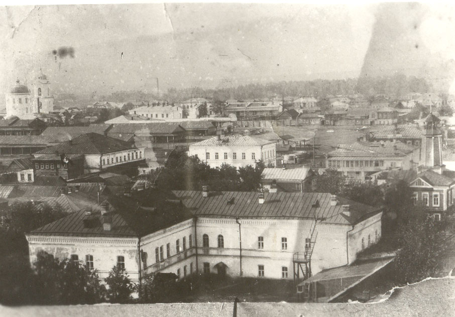

Мензелинск один из древнейших городов нашей республики. О времени основания города Мензелинска у историков и краеведов нет до сих пор единого мнения. Мензелинск один из древнейших городов нашей республики. Своими корнями он восходит в далекое прошлое. В памятной книге Оренбургской губернии есть запись, которая говорит, что Мензелинск заложен в 1584 – 1586 годах. Еще с 12 века здесь проходил знаменитый торговый «Шелковый путь» из стран Востока на Запад. На безымянной речке торговые караваны останавливались на отдых. «Мензиль» в переводе с арабского означает «становище» или меру длины одного верблюжьего перехода от одной стоянки до другой.